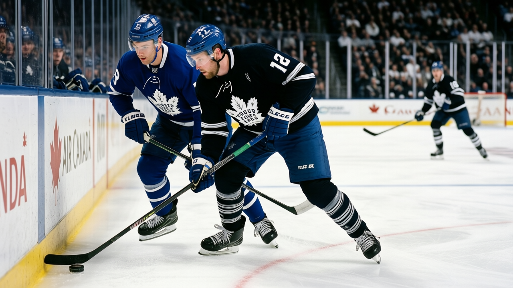

TOR
TORDefensive Desk: Svehla and Salo both sitting, and the chart gets thin fast
Two defencemen are not dressed for the road trip. The young guys get the minutes, and the minutes are 14 and 16.
 Sam OkaforLeafs beat reporter · Queen City Telegram
Sam OkaforLeafs beat reporter · Queen City Telegram
 Robert Svehla83 and
Robert Svehla83 and  Sami Salo81 are both not dressed. Svehla, 35, the Norris winner from last season, has played 18 games this year at 23.8 minutes a night, 14 points, 12 of them assists. Salo, 30, has 15 games at 20.3 minutes, 6 points. Neither is on the injured list. The league has not designated a body part. They are simply not on the sheet.
Sami Salo81 are both not dressed. Svehla, 35, the Norris winner from last season, has played 18 games this year at 23.8 minutes a night, 14 points, 12 of them assists. Salo, 30, has 15 games at 20.3 minutes, 6 points. Neither is on the injured list. The league has not designated a body part. They are simply not on the sheet.
That leaves the defensive chart:  Jiri Fischer83,
Jiri Fischer83,  Bryan McCabe82,
Bryan McCabe82,  Tomas Kaberle82,
Tomas Kaberle82,  Rostislav Klesla82, Steve Eminger75, and Carlo Colaiacovo71.
Rostislav Klesla82, Steve Eminger75, and Carlo Colaiacovo71.
The young ones get the call
Klesla, 22, has played all 31 games at 14.7 minutes a night, 19 points, 16 of them assists. The Bureau's Development Index has him at +5, his base of 78 reading 81. Eminger, 21, has 30 games at 16.1 minutes. Colaiacovo, 21, has 16 games at 17.5 minutes.
When Svehla and Salo are dressed, they take the second and third pairs. Klesla, Eminger, and Colaiacovo fill the fourth and the depth. When they are not, the pairs shift. Kaberle and McCabe take the top two. The rest is 21 and 22.
Fischer told The Tunnel's Jan Kowalczyk after the Philadelphia game that he likes playing with McCabe: "He wants the puck, he wants to skate with it, so you give it to him and you go. Simple." That pairing holds. McCabe is 29, 44 points, 23.2 minutes a night. Fischer is 24, 13 points, 21.2 minutes.
What the numbers say
McCabe's 44 points lead the team. Kaberle has 15 at 19.8 minutes. Klesla has 19 at 14.7. Eminger has 15 at 16.1. Colaiacovo has 8 at 17.5.
The top pair is the one that matters. McCabe and Kaberle, 44 and 15 points, 23.2 and 19.8 minutes. The second pair is Fischer and whoever, 13 points and 21.2 minutes. The third and fourth are 21 and 22, and the question is whether 14.7 minutes at 22 is enough to hold a pair when the guy next to you just won the Norris.
The road trip starts Friday. Svehla and Salo are not dressed. The chart is what it is.